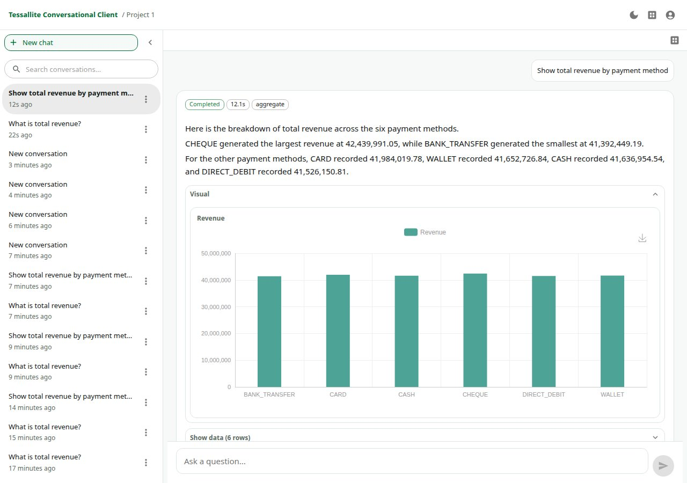

What the agent uses
- Approved model objects and glossary terms.
- Project-level agent configuration and enabled models.
- Persona scope, row security, and column restrictions.
- Trace, citations, query steps, and judge checks for review.
Conversational agent
Agent Chat uses the project model, glossary, enabled models, personas, and security rules to plan queries and explain results. It is for exploration, explanation, and decision support, not a shortcut around the semantic model.

Use Agent Chat when a user wants to ask "what changed?", "why did margin move?", or "show the trend by region" without writing SQL. If the answer reveals that a metric or glossary term is missing, switch to Model Builder and fix the semantic model.
The agent does not invent its own data model. It is grounded in Tessallite context and still runs governed queries through the platform path, so user permissions continue to matter.